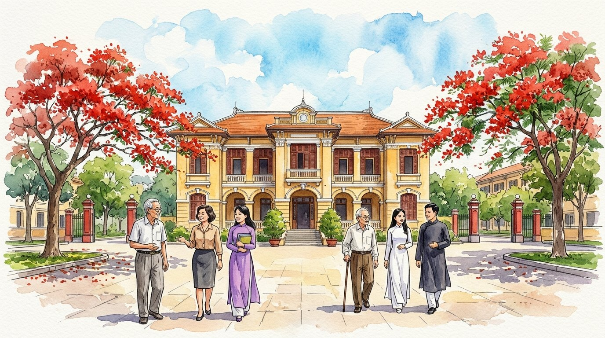
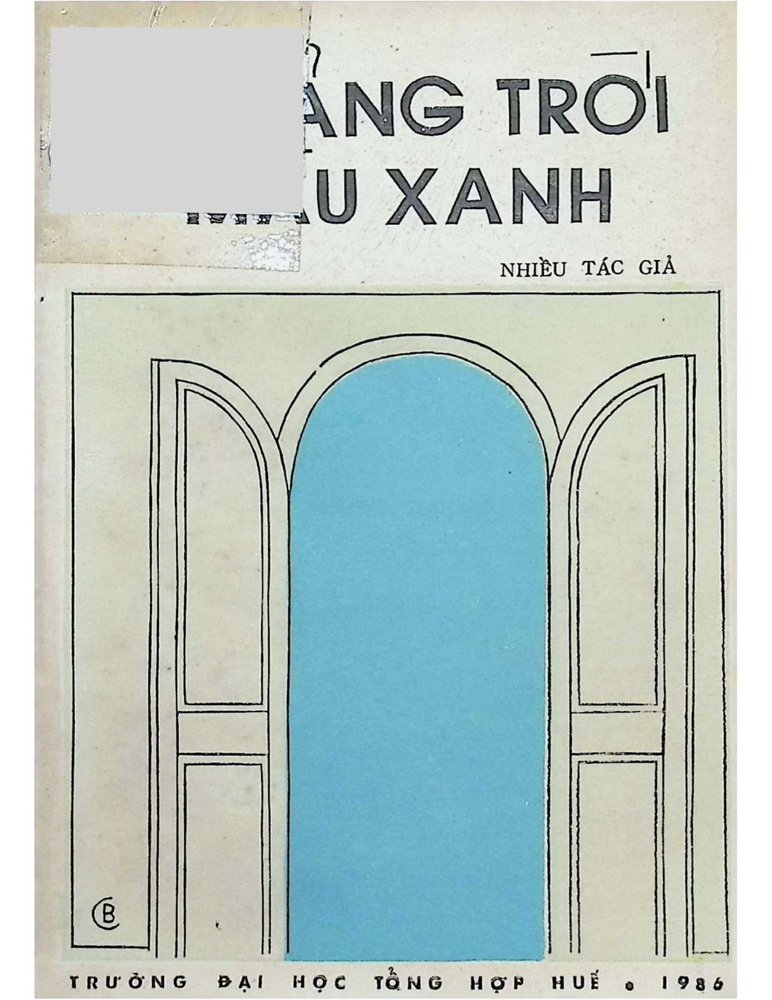
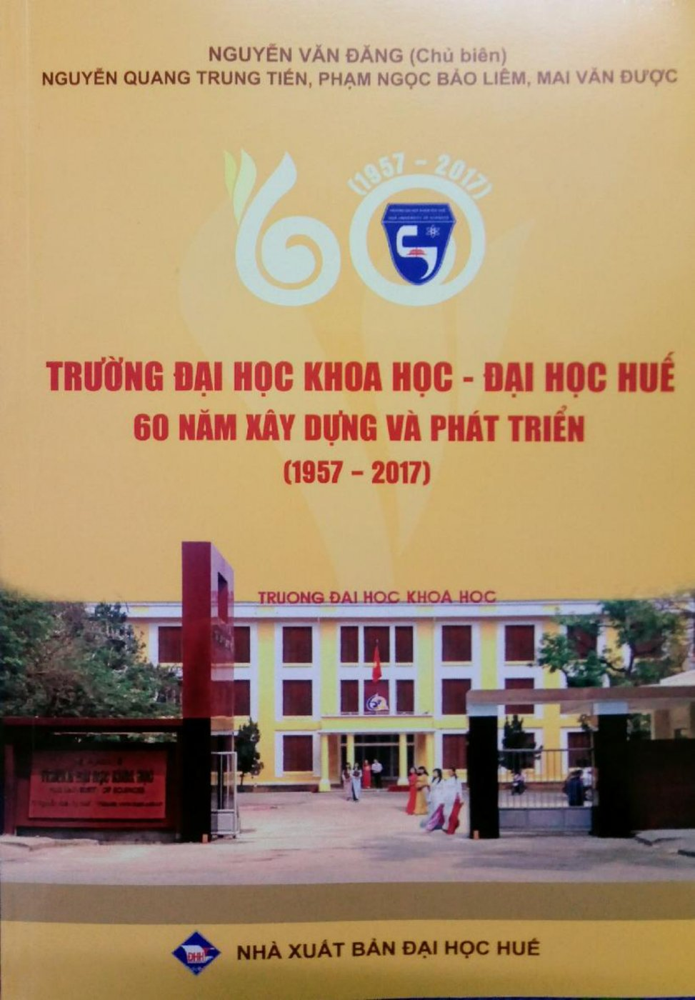

Tri ân Ngày Nhà giáo Việt Nam 20/11/2026 & Hướng tới Kỷ niệm 70 năm Trường ĐH Khoa học Huế (1957 – 2027)
Cỡ chữ:
Viện Đại học Huế (1957) • Đại học Tổng hợp Huế (1976) • Đại học Khoa học Huế (1994 – nay)
Những Ngày Xưa Thương Nhớ
Kỷ vật tri ân hướng về Ngày Nhà giáo Việt Nam 20/11/2026 & 70 năm Trường ĐHKH Huế
Tìm lại bóng dáng mình và đồng nghiệp những ngày xưa thương nhớ
“Trong không khí hướng về Ngày Nhà giáo Việt Nam 20/11/2026 và xa hơn là Kỷ niệm 70 năm Trường Đại học Khoa học (1957–2027), hai tư liệu quý «Trường Đại học Khoa học – Đại học Huế: 60 năm xây dựng và phát triển (1957–2017)» và ấn phẩm «Khoảng trời màu xanh – Tập thơ văn chào mừng 10 năm thành lập Trường Đại học Tổng hợp Huế (1976–1986)» được lưu giữ và chuyển thể thành không gian ký ức này, với hy vọng quý thầy cô sẽ thấy lại bóng dáng mình, đồng nghiệp và học trò của mình những ngày xưa thương nhớ.”
Gợi ý tra cứu nhanh:

Minh họa màu nước: Mái trường Đại học Khoa học Huế (77 Nguyễn Huệ) qua các thế hệ thầy trò dưới sắc phượng đỏ và khoảng trời màu xanh

Ấn phẩm năm 1986 • 147 trang
Khoảng Trời Màu Xanh
Tập thơ văn kỷ niệm 10 năm ĐH Tổng hợp Huế (1976–1986). Bìa: Họa sĩ Bửu Chỉ. Toàn văn 46 tác phẩm & 45 chú thích tác giả.
Đọc toàn văn & xem bản gốc →

Xuất bản năm 2017 • 233 trang
Lịch Sử 60 Năm Trường ĐHKH Huế
Biên niên sử 3 thời kỳ (1957–1975, 1975–1994, 1994–2017), 7 phụ lục danh sách thầy cô, cán bộ & 41 ảnh tư liệu quý.
Đọc toàn văn & tra cứu phụ lục →
Dòng chảy lịch sử 7 thập niên (1957 – 2027)
Bốn cột mốc của một mái trường bên dòng Hương Giang
1957 – 1975
Đại học Khoa học & Đại học Văn khoa – Viện Đại học Huế
Khởi đầu từ Ban Văn khoa và Ban Toán học Đại cương (1/3/1957), phát triển thành hai phân khoa lớn tại cơ sở Morin và Lê Lợi, vừa đào tạo tri thức vừa rực lửa phong trào sinh viên đô thị Huế.
1975 – 1994
Tiếp quản & Thành lập Trường Đại học Tổng hợp Huế (27/10/1976)
Những ngày đầu tiếp quản tháng 4/1975, quyết định 426/TTg thành lập Trường ĐHTH Huế, tuyển sinh Khóa 1 (1977) với 7 ngành học, vượt qua năm tháng gian khó và nở hoa kết trái trong «Khoảng trời màu xanh» (1986).
1994 – 2017
Trường Đại học Khoa học – Đại học Huế thời kỳ đổi mới & hội nhập
Theo Nghị định 30/CP ngày 4/4/1994, Trường mang lại tên gọi Trường Đại học Khoa học thuộc Đại học Huế, mở rộng quy mô 18 khoa/bộ môn, đào tạo hơn 42.400 cử nhân, kỹ sư, kiến trúc sư, thạc sĩ, tiến sĩ.
20/11/2026 – 2027
Tri ân Nhà giáo Việt Nam & Hướng tới Kỷ niệm 70 năm (1957–2027)
Nối nhịp cầu ký ức giữa các thế hệ thầy cô, cán bộ và cựu sinh viên qua từng trang sách cũ, để mỗi người tìm thấy lại hình bóng thân thương của mình và đồng nghiệp dưới mái trường xưa.
Phòng Tranh Ký Ức Màu Nước & Tư Liệu Đối Chiếu
12 Khung Trời Kỷ Niệm Minh Họa Từ Hai Tư Liệu Gốc
Mỗi bức tranh màu nước dưới đây được vẽ cảm hứng trực tiếp từ những trang hồi ức, vần thơ, truyện ngắn trong Khoảng trời màu xanh (1986) và tư liệu lịch sử trong Sách 60 năm Trường ĐHKH Huế (2017), đặt cạnh trích dẫn nguyên văn và ảnh tư liệu gốc.
Danh bạ Tra cứu Xuyên suốt Hai Tư liệu (1957 – 1986 – 2017)
Tìm Bóng Dáng Thầy Cô, Đồng Nghiệp & Tác Giả
Tổng hợp và liên kết tự động 379 thầy cô, cán bộ quản lý, giảng viên, nhân viên và tác giả/cựu sinh viên được ghi danh trong Khoảng trời màu xanh (1986) và Sách Lịch sử 60 năm Trường ĐHKH Huế (1957–2017). Bấm vào tên mỗi người để xem toàn bộ những trang sách, dòng hồi ký, bài thơ hoặc bảng phụ lục có nhắc đến mình và đồng nghiệp.
Ấn phẩm Kỷ niệm 10 năm thành lập Trường Đại học Tổng hợp Huế (27/10/1976 – 27/10/1986)
Khoảng Trời Màu Xanh (1986)
Công trình chào mừng 10 năm thành lập Trường Đại học Tổng hợp Huế của Khoa Ngữ văn và Đoàn TNCS Hồ Chí Minh Nhà trường • Chịu trách nhiệm xuất bản: GS. Hoàng Đức Đạt • Biên tập: Lê Tài Thuận – Nguyễn Thời – Phạm Phú Phong • Sửa bản in: Nguyễn Văn Hòa • Bìa: Bửu Chỉ • Trình bày: Lương Hà.
147 trang sách gốc3 Hồi ký & Ghi chép của các Thầy32 Bài thơ10 Truyện ngắn & Bút ký45 Tiểu sử tác giả
Công trình Lịch sử Kỷ niệm 60 năm thành lập Trường (3/1957 – 3/2017) • NXB Đại học Huế
Trường Đại Học Khoa Học – Đại Học Huế: 60 Năm Xây Dựng Và Phát Triển (1957 – 2017)
Lời giới thiệu: PGS.TS. Hoàng Văn Hiển (Bí thư Đảng ủy, Hiệu trưởng) • Ban biên soạn: PGS.TS. Nguyễn Văn Đăng (Chủ biên), GS.TS. Nguyễn Quang Trung Tiến, ThS. Phạm Ngọc Bảo Liêm, ThS. Mai Văn Được.
233 trang nguyên bản3 Chương lịch sử (1957–1975, 1975–1994, 1994–2017)7 Phụ lục Bảng biểu danh sách41 Ảnh tư liệu & Chân dung lãnh đạo
Hồ sơ Ký ức Thầy Cô, Cán bộ & Tác giả
Tên Thầy/Cô
Xem ảnh tư liệu / Trang sách gốc
Thiết kế Dàn trang Sách in Chuẩn A4 / B5
Chuyển Đổi Sang Bản In / Xuất File PDF Kỷ Niệm
Trang web đã được tích hợp bộ quy tắc dàn trang in ấn tự động (@media print): tự động ẩn thanh công cụ, căn lề chuẩn sách in, giữ nguyên khổ thơ, bảng biểu và tranh màu nước minh họa. Quý thầy cô có thể chọn một trong các chế độ bản in dưới đây (hoặc nhấn Ctrl+P / Cmd+P bất kỳ lúc nào):
Khuyên dùng làm Kỷ vật 20/11
1. Ấn phẩm Kỷ niệm: 12 Tranh Màu Nước & Hồi Ức Tiêu Biểu
Gồm bìa kỷ niệm, lời tri ân 20/11/2026, toàn bộ 12 bức tranh màu nước kèm trích dẫn nguyên văn, và 3 bài hồi ký mở đầu của GS. Hoàng Đức Đạt, GS. Nguyễn Quốc Lộc, Thầy Nguyễn Xuân Hòa.
Toàn văn Ấn phẩm 1986
2. Trọn bộ «Khoảng Trời Màu Xanh (1976 – 1986)»
In toàn văn 100% nội dung gốc gồm Lời giới thiệu, 3 bài Hồi ký/Ghi chép, 32 bài thơ, 10 truyện ngắn/bút ký, 45 mục Chú thích tác giả cùng tranh màu nước minh họa.
Đang mở trên màn hình
3. In Mục / Tác phẩm / Chương sách đang xem
Chỉ in phần nội dung quý thầy cô đang mở đọc hiện tại (một bài thơ, một truyện ngắn, một chương lịch sử hoặc danh sách phụ lục) kèm tranh minh họa.
Toàn văn Sách Lịch sử 2017
4. Trọn bộ «Sách Lịch Sử 60 Năm Trường ĐHKH Huế (1957 – 2017)»
In toàn văn 23 phần (Lời giới thiệu, Chương 1, Chương 2, Chương 3, Kết luận, 7 Phụ lục bảng biểu và 41 ảnh tư liệu lịch sử).